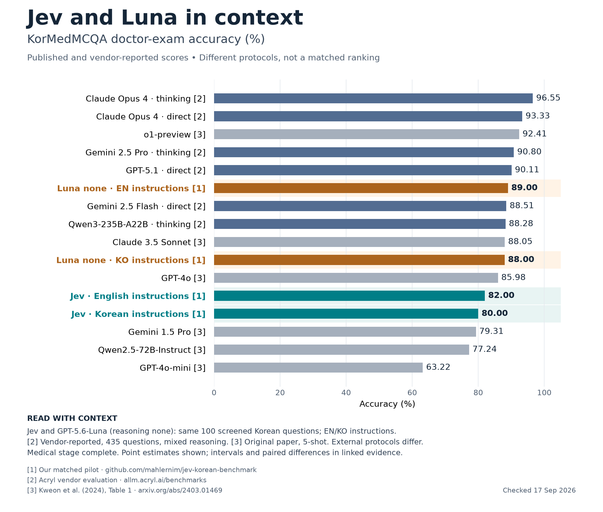

Jev and Luna in context

PNG · SVG · PDF · Main report
{kind=link}
{kind=link}
This is a contextual comparison, not a matched ranking of all models. Jev and GPT-5.6-Luna with reasoning none used the same 100 screened Korean doctor-exam questions. English and Korean refer to instruction language. Luna scored 89/100 with English instructions and 88/100 with Korean instructions, versus Jev's 82/100 and 80/100. Luna's medical stage has 200 successful responses, zero failures and zero pending. The full Luna experiment has also completed.
Acryl reports the full 435-question doctor test with the reasoning settings shown. Historical scores come from the original paper's doctor column, using its 5-shot protocol. No external comparator was rerun for this graphic. Confidence intervals are omitted from the compact graphic. The Luna stage-2 evidence retains Wilson intervals and descriptive paired bootstrap intervals. Luna minus Jev is +7 percentage points (95% interval 0 to 14) with English instructions and +8 (2 to 15) with Korean instructions. These small-sample intervals are unadjusted for multiple comparisons.
Sources checked September 17, 2026
- Our matched pilot, Jev results in
results/stage-2.jsonand Luna medical-stage snapshot inresults/infographic-luna-stage-2.json. Luna model aliasgpt-5.6-luna, reasoningnone, decision-only output. The minimal response schema differs between providers. - Acryl benchmark page, KorMedMCQA-435 section. These are vendor-reported results, not independently reproduced here. Only the explicit doctor-test rows are used. The page's separate historical summary includes cross-profession averages and is not used.
- Kweon et al., KorMedMCQA, Table 1 and Appendix C. Doctor-column scores, not the weighted overall average. GPT-4o is the August 2024 version; Claude 3.5 Sonnet is the October 2024 version.
Rebuild without API calls using python -m jevbench.comparison_infographic. The source script retains the exact plotted values and source IDs.